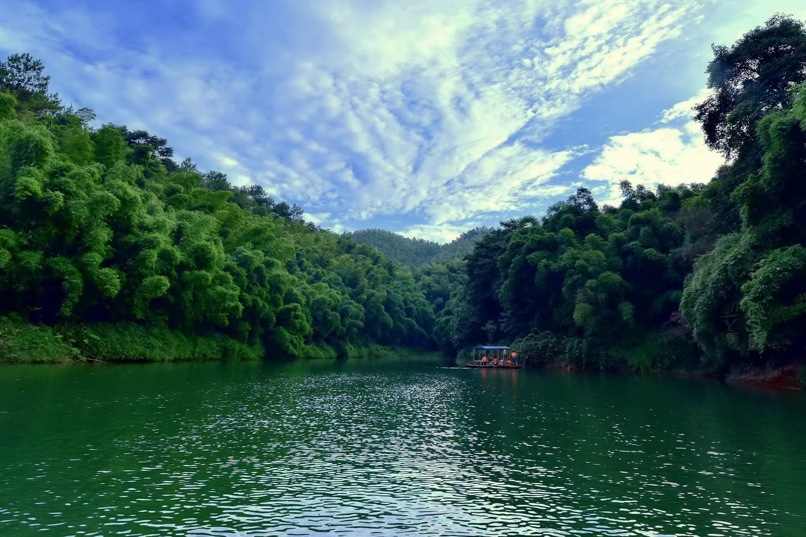
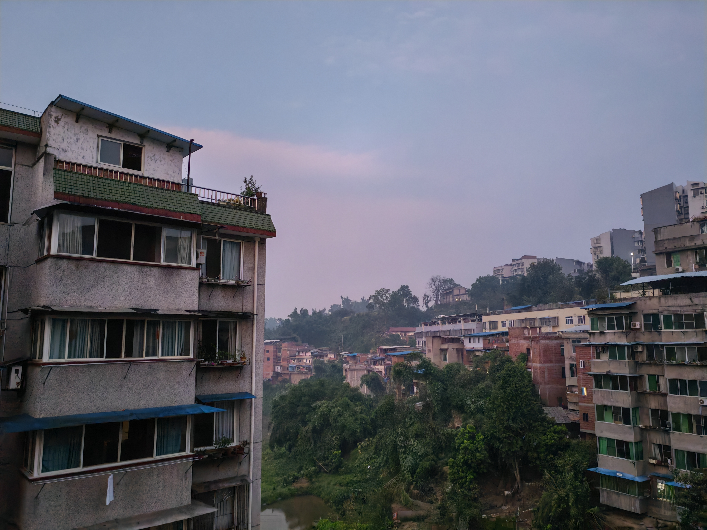
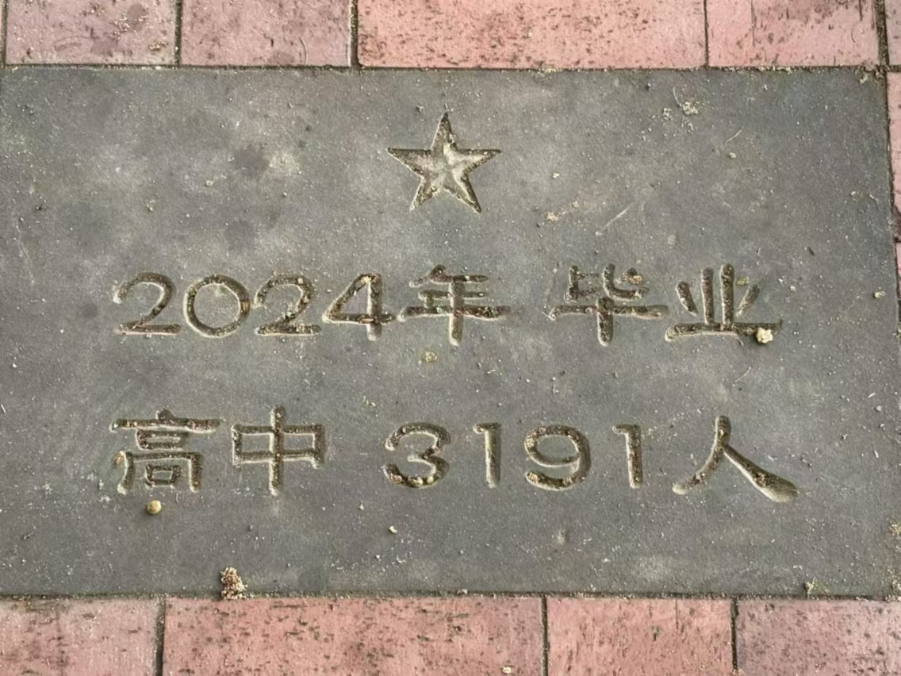
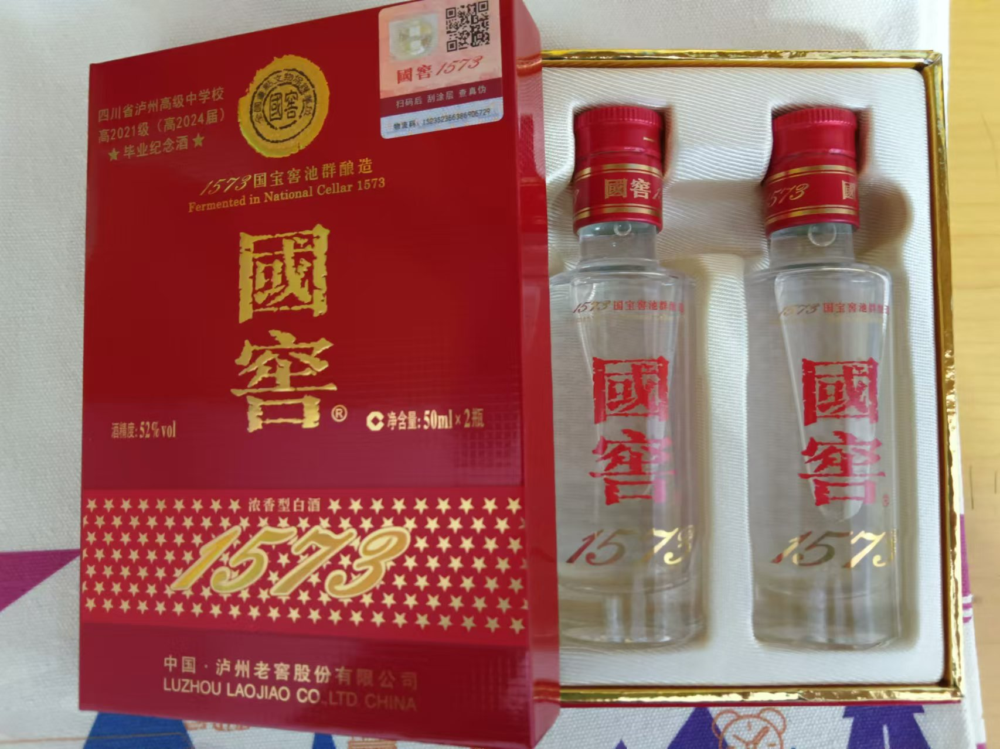
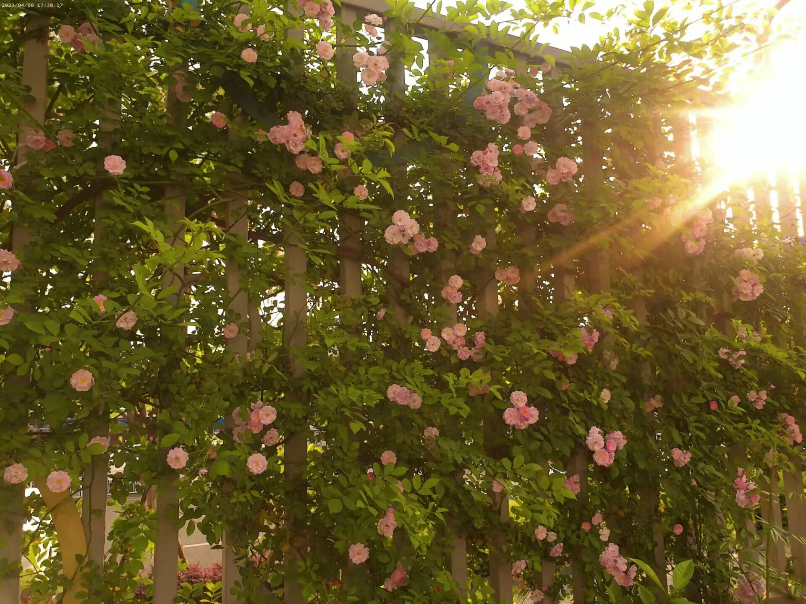
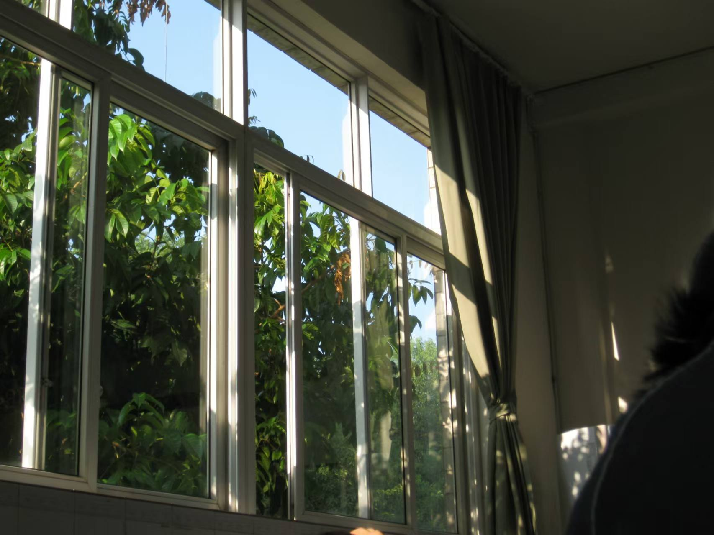
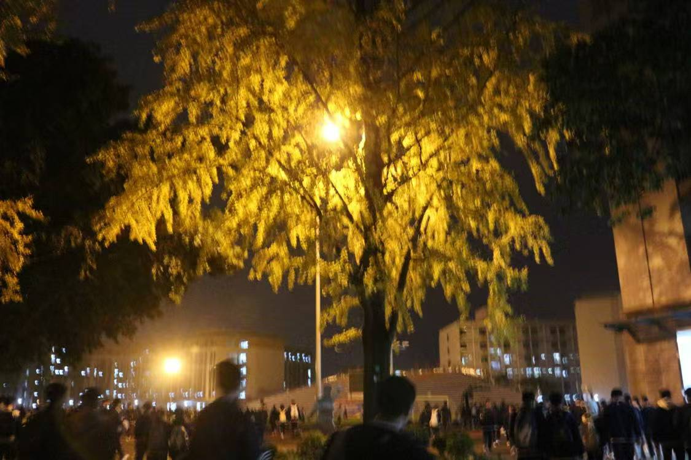
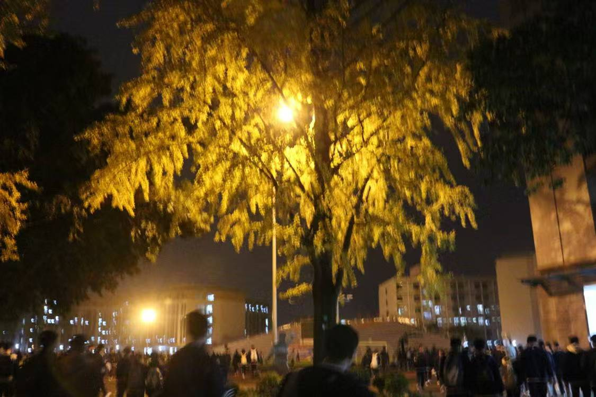
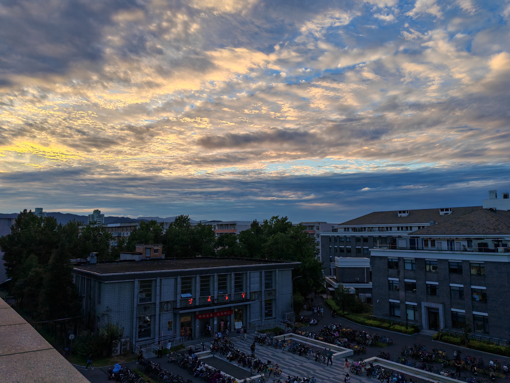
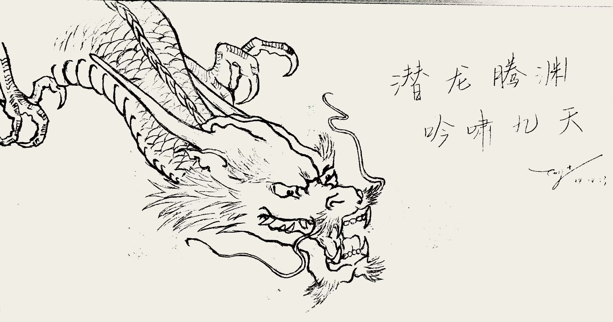

蜀南竹海.jpg
说到宜宾的风景，不得不提的就是蜀南竹海啦！竹海是国家“AAAAA”级旅游区，且荣登2008年北京奥运会开幕式。它幅员面积120平方千米，核心景区44平方千米，共有八大主景区、两大序景区，共134处景点。景区内有58种竹子共7万余亩，是我国最大的集山水、溶洞、湖泊、瀑布于一体，兼有历史悠久的人文景观的最大原始“绿竹公园”，拥有高达87%的植被覆盖率，是我国空气负离子含量极高的天然氧吧。
至于美食……四川人，懂的都懂!（当然，也并非天天吃）

Hotpot!
其实，上面这些东西似乎都离我很远。我只是住在一个普通的小镇里，拥有普通的家境，过着普通的生活，一日三餐，平凡至极。但这里永远是我心中的桃花源。


泸州高中
（莫名感觉和p大校徽有点像？）
四川省泸州高级中学校（Luzhou Senior High School）位于四川省泸州市忠山路二段33号（忠山校区），是四川省一级示范性普通高中（原称国家级示范性普通高中）。它创建于1954年；1981年，该校被评为四川省首批42所重点中学之一；2003年1月6日，该校通过省教厅专家组检查评估，成为四川省国家级示范性普通高中。2013年12月，经省教育厅复核，批准为四川省一级示范性普通高中。
泸州高中城西校区位于泸州市江阳区康健路二段，地处城市西部中心核心区域，学校占地150亩，建筑面积119650平方米。
泸州高中茜草校区位于泸州市江阳区长江二桥西岸，紧邻张坝桂圆林旅游区，占地106亩，于2023年起开始招生。

忠山校区正门（点击查看大图）


在四川省泸州市，有一项独特的毕业传统——当地高中会在学生毕业时赠送泸州老窖酒作为礼物。这一传统不仅体现了泸州作为“酒城”的特色，也成为了当地教育文化的一部分。
泸州老窖作为中国著名的白酒品牌，与当地教育机构有着紧密的合作关系。据网友分享，泸州老窖天府中学等学校在学生毕业时，会向每位毕业生赠送两瓶1573品牌的白酒作为毕业礼物。这一做法不仅让学生感受到了家乡的温暖和文化的传承，也成为了他们高中生涯的美好回忆。
——摘编自我的手机


 

校园风景
选择你认为最好看的一张照片吧！点击图片说不定有惊喜哦~
<01>拍照
本人资金有限，难以购置一台相机，故只能用手机“拍照”而非“摄影”。我平时喜欢拍风景照，不爱拍人像（因为拍不好awa），也并不专业，所以只能在海量照片中找出相对较好的几张。
另：本网页几乎所有照片均为本人拍摄，若喜欢的话欢迎留存，但请勿转载or商用（虽然这种可能性也不大）




<02>书画
本人是高中办黑板报的主力军，但可惜高三太忙了就逐渐练得少了。下面是我在三诊考试前在高考冲刺本最后一页上摸的鱼，这导致了本人三诊考得极差（─.─||）

<03>制作音乐
我在高二上学期通过一次偶然的机会了解了电子音乐的制作，此后便开始进行创作。但也是因为高三太忙了，没有时间继续做，所以打算在p大搞下去~
下面是一段去年夏天做的音乐，也不是特别好听，并且后来没有写下去，原文件也找不到了，但是依然是本人目前为止最新的创作（＃－.－）